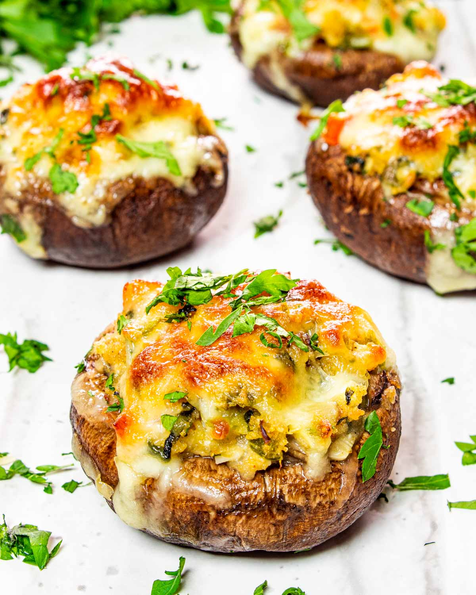

Stuffed Mushrooms Recipe

Flavourful baked and stuffed portabello mushrooms, quick in the oven. Perfect for a starter and few ingredients.
Ingredients
- 4-6 medium-large portabello mushrooms
- 125g unsmoked bacon lardons
- 1 shallot
- 1 garlic clove
- 4 tbsp dried breadcrumbs
- 1 tsp dried sage
- 50g medium cheddar (grated)
Serves 2 people and contains a total of 216kcal per mushroom.
Steps
- Heat oven to 220C/200C fan. Wipe the mushrooms to remove any dirt, then remove stalks. Place on tray top-side down.
- Fry the lardons for 8-10mins until they begin to crisp up, then finely chop the shallots, mushroom stalks and garlic. Add to the bacon and fry on a moderate heat for about 5mins until all ingredients are cooked.
- Take off the heat and add breadcrumbs and sage, then stir to make an even mixture. Spoon into the hollows of the mushrooms and sprinkle with grated cheeese.
- Bake for approximately 8-10mins until the cheese has melted. Serve with bread and a green salad.
Home
About Me